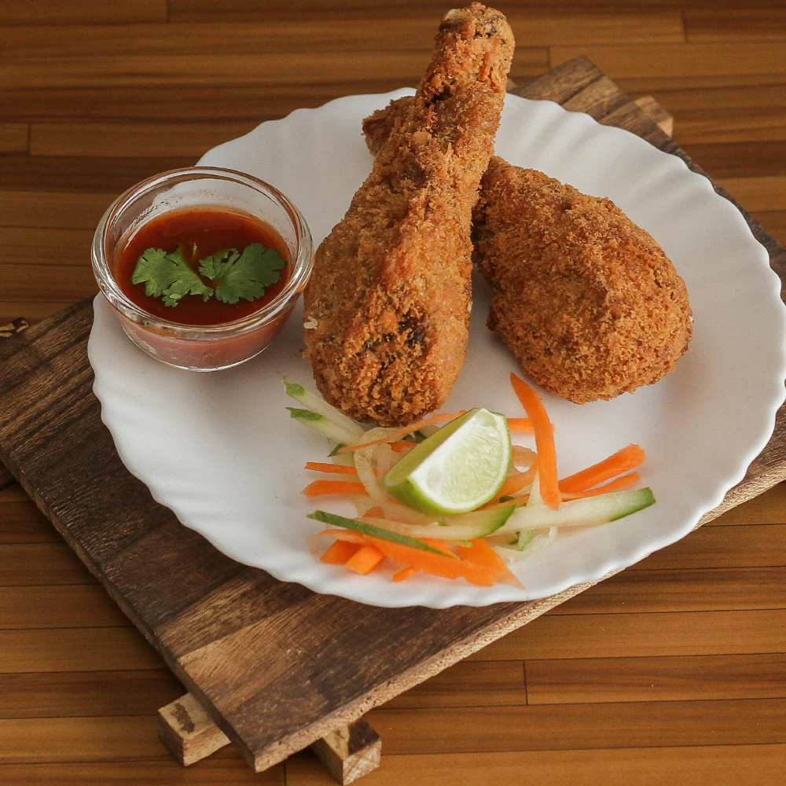
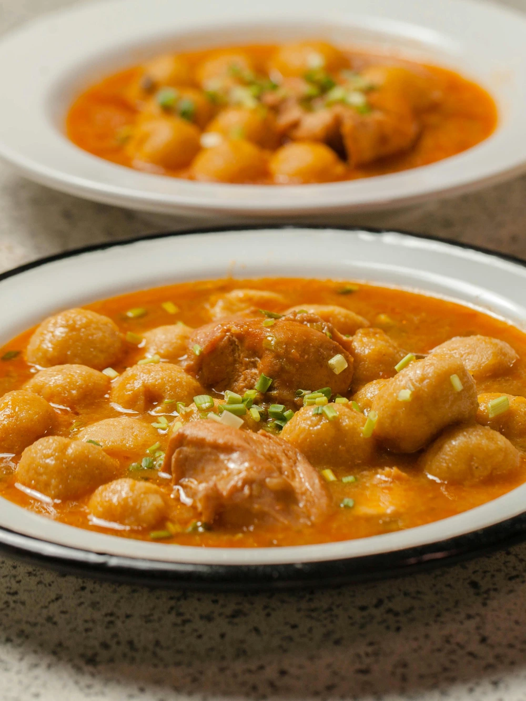
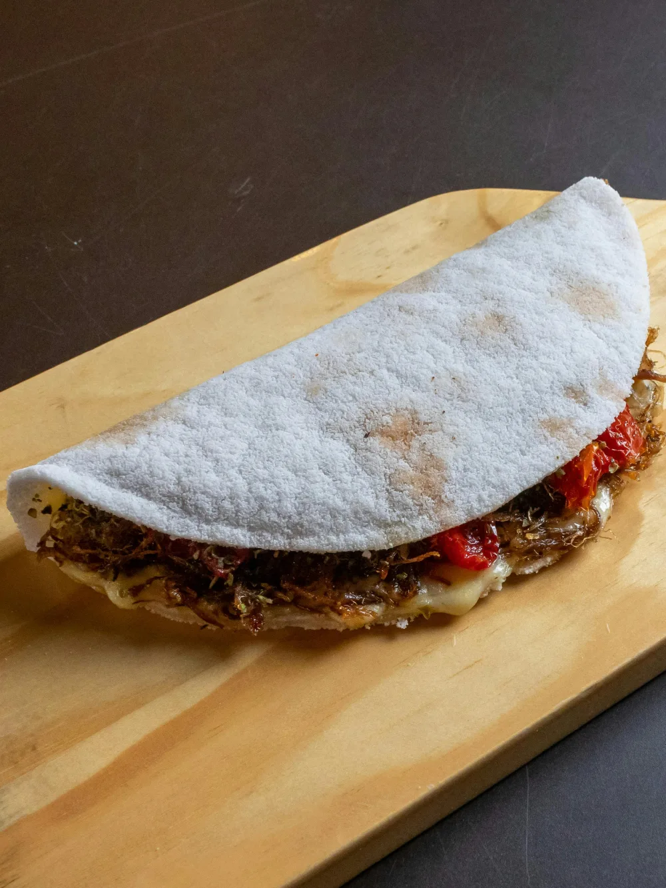

Coxinha artesanal com frango desfiado e catupiry.

Bolinho crocante de mandioca com carne seca e queijo.

Tapioca tradicional com queijo coalho e coalhada seca.
* Dados de contato e links fictícios exclusivos para demonstração de portfólio.